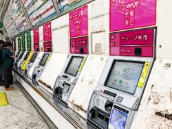

2019年度営業関係施策（その2）
2019年度営業関係施策（その2）について」提案を受ける
2019年5月30日、東京地本は東京支社から「2019年度営業関係施策（その2）について」提案を受けました。

提案にあたって支社経営側は、「・・・具体的には、駅改良工事やICT化の進展による利便性向上、業務実態の変化等を踏まえ、出改札、ホーム及び内勤の見直しを行っていく。また、駅業務委託についてエルダー社員の雇用の場における選択肢の拡大や、『当社を取り巻く環境の変化』『駅の要員事情』『駅業務を担う人材の育成』を踏まえて施策を推進する。」としています。
そして、「なお、施策の実現を通じ、当社グループの全「社員を主役に働きがいを創出し、社員と当社グループの持続的な成長につなげると共に、『仕事を通じた達成感・充足感』『職場環境の改善』等により、当社グループの社員・家族の幸福の実現を目指していく」と結んでいます。
地本は、関係分会と連携と取りながら、経営側の言う「社員・家族の幸福の実現」が、働く者にとって実感できるものとなるように、取り組んでいきます。
「提案内容」
大井町駅
- 駅業務全般委託
- 管理駅：品川駅
2019年12月1日実施
高田馬場駅
- 駅業務全般委託
- 管理駅：新宿駅
2019年11月1日実施
御徒町駅
- 駅業務全般委託
- 管理駅：上野駅
2020年3月1日実施
有楽町駅
- 改札体制の見直し
2019年8月1日実施
新橋駅
- 出札体制の見直し
- 改札体制の見直し
2020年1月14日実施
神田駅
- 内勤体制の見直し
2019年10月1日実施
池袋駅
- 出札体制の見直し
2019年8月1日実施
上野駅
- ホーム体制の見直し
2019年9月1日実施 - 不忍改札及び公園改札の業務委託
2020年3月20日実施
新松戸駅
- 出札体制の見直し
- 改札体制の見直し
2019年10月1日実施
以 上